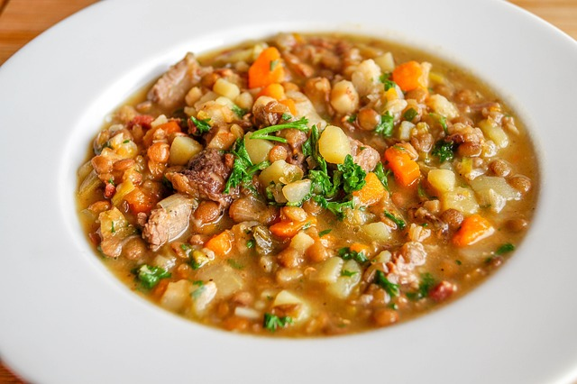

Lentil Stew

Simple, vegan lentil dish
Prepared with few ingredients and just as little effort and just perfect to cook it in stock. This is my favorite vegan lentil stew.
Maybe, oh what, certainly you have lentil stew so or so similar, as I serve it to you today already thousands of times eaten. Therefore, it is now time to leave aside whether it needs for a simple, vegan lentil stew at all another recipe. But for me, my own favorite lentil stew is always a bit like a comforting, warm hug. A little bit of "ideal world" to spoon up. The little comforting plaster that everyone can use from time to time. That alone is why I want to share it with you today.
Ingredients
- 2 onions
- 400 g potatoes
- 180 g carrots
- 2 stalks of celery
- 2 tablespoons butter-flavored canola oil or other vegetable oil
- 2 tsp salt
- 500 g mountain lentils
- 20 g lovage or parsley
Optional
- 2 tbsp apple cider vinegar
- 2 tsp maple syrup
- 125 g tofu sausage or smoked tofu
Steps
- Cut vegetables into cubes of about 1 cm. Add oil to a hot pot, sauté vegetables over medium heat for 5 minutes, stirring occasionally.
- Season with salt, add lentils and deglaze with 1.25 l water. Simmer for 25 minutes over low heat with the lid on. Stir from time to time.
- Finely chop lovage, set aside about 4 tablespoons of the greens for the topping. Add the remaining cabbage to the stew and simmer for another 5 minutes or until the lentils are al dente.
- Season with apple cider vinegar and maple syrup and serve topped with the lovage greens and tofu sausage or diced smoked tofu.